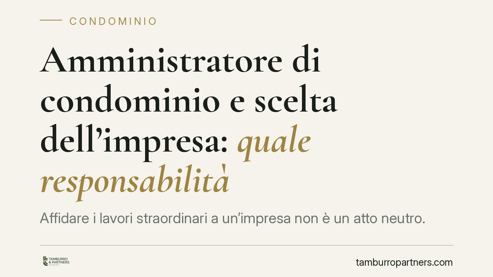

Amministratore di condominio e scelta dell'impresa: quale responsabilità
Affidare i lavori straordinari a un'impresa non è un atto neutro. L'amministratore che sceglie l'appaltatore e ne controlla l'operato può rispondere per una selezione negligente o per una vigilanza omessa. Vediamo su quali basi normative si fonda questa responsabilità e come limitare il rischio con verifiche documentali tracciabili.

Il fatto e perché conta
Quando il condominio delibera lavori straordinari – rifacimento facciate, tetti, impianti – la scelta dell'impresa appaltatrice passa dall'amministratore. Se i lavori sono difettosi, se l'impresa è priva dei requisiti o se in cantiere accade un incidente, ci si chiede fino a che punto l'amministratore risponda di quella scelta. La risposta non è automatica, ma passa da due nozioni distinte: la colpa nella scelta e la colpa nel controllo.
Inquadramento normativo
Occorre anzitutto sgombrare il campo da un equivoco ricorrente. L'art. 2049 c.c. disciplina la responsabilità di padroni e committenti per i fatti illeciti dei propri dipendenti o commessi, cioè di soggetti legati da un rapporto di preposizione (subordinazione o inserimento nell'organizzazione altrui). L'impresa appaltatrice è, di regola, un soggetto autonomo: organizza mezzi e personale a proprio rischio ed esegue l'opera in indipendenza. Per questo, salvo casi in cui il committente si ingerisca fino a ridurre l'appaltatore a mero esecutore, la responsabilità dell'amministratore non si fonda sull'art. 2049 c.c.
Il fondamento va cercato altrove: nei doveri di diligenza propri del mandato. Gli artt. 1130 e 1135 c.c. attribuiscono all'amministratore l'esecuzione delle deliberazioni e la cura degli interessi comuni; l'art. 1136 c.c. regola la formazione delle delibere assembleari. Da questo quadro discendono due profili di colpa:
- la culpa in eligendo (colpa nella scelta): aver selezionato un'impresa priva dei requisiti tecnici o economici verificabili;
- la culpa in vigilando (colpa nel controllo): non aver seguito l'esecuzione dei lavori nei limiti dei propri poteri.
A questi si aggiunge un obbligo specifico in materia di sicurezza. L'art. 90 del D.Lgs. 81/2008 pone in capo al committente – e per esso all'amministratore – la verifica dell'idoneità tecnico-professionale dell'impresa affidataria. Il contenuto minimo di tale verifica è definito dall'Allegato XVII al medesimo decreto, che indica, tra l'altro, l'iscrizione alla Camera di Commercio, il Documento Unico di Regolarità Contributiva (DURC) e le autocertificazioni relative al possesso dei requisiti. L'omissione di questi controlli espone l'amministratore anche sul piano della sicurezza del cantiere.
Implicazioni pratiche
Un orientamento giurisprudenziale consolidato riconosce che l'amministratore risponde quando la scelta dell'impresa sia stata negligente o quando abbia trascurato la vigilanza esigibile in base ai propri poteri. Il punto sensibile, spesso frainteso, riguarda la delibera assembleare.
La delibera che approva i lavori e ratifica l'impresa non costituisce uno scudo assoluto. Se l'assemblea decide sulla base di informazioni carenti che l'amministratore avrebbe dovuto raccogliere e sottoporre – requisiti dell'impresa, regolarità documentale, congruità dell'offerta – la copertura assembleare non elide la sua responsabilità professionale. La delibera vincola sul cosa fare; non sostituisce la diligenza sul come istruire la decisione.
Sul versante fiscale, la scelta di un'impresa priva di requisiti o regolarità può riflettersi sull'accesso alle detrazioni edilizie. La disciplina delle detrazioni per interventi sulle parti comuni e i relativi meccanismi di utilizzo – incluse le opzioni previste dall'art. 121 del D.L. 34/2020, nella formulazione tempo per tempo vigente – richiedono documentazione e adempimenti puntuali. Trattandosi di normativa soggetta a frequenti modifiche, ogni valutazione specifica va verificata sulla disciplina in vigore al momento dell'intervento.
Cosa fare in concreto
- Verificare i requisiti dell'impresa prima dell'affidamento: visura camerale aggiornata, DURC regolare e autocertificazioni ex Allegato XVII del D.Lgs. 81/2008.
- Conservare la documentazione raccolta in fase di selezione, così da rendere dimostrabile la diligenza esercitata.
- Portare in assemblea informazioni complete su requisiti, offerte e congruità economica, verbalizzando gli elementi posti a base della decisione.
- Formalizzare i poteri di vigilanza nel contratto d'appalto e documentare i controlli sull'avanzamento dei lavori.
- Verificare la disciplina fiscale vigente al momento dell'intervento, coordinandosi con un professionista per i requisiti delle detrazioni.
È opportuno che la selezione delle imprese segua un iter documentale costante: la prassi prudente suggerisce di rendere sistematica – e quindi provabile – ogni fase di verifica.
---
Contributo informativo a cura di Tamburro & Partners - Avv. Giuseppe Tamburro. Non costituisce parere legale.
Ogni condominio ha una storia a sé.
Se gestisci un'amministrazione e vuoi un confronto su una specifica questione condominiale, scrivi allo studio. Ti rispondiamo entro un giorno lavorativo.